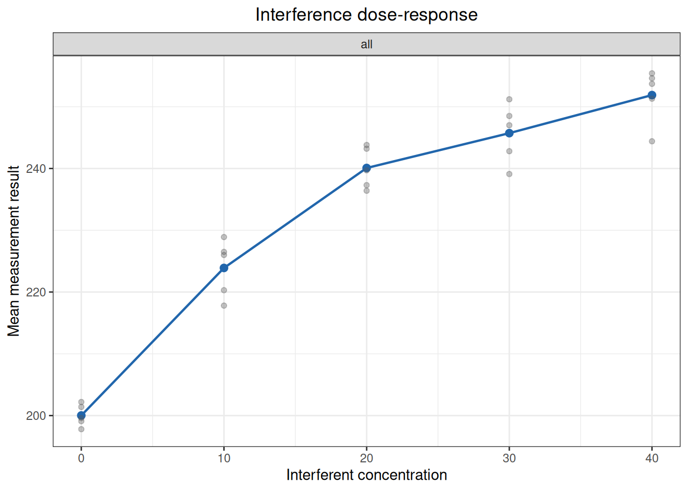
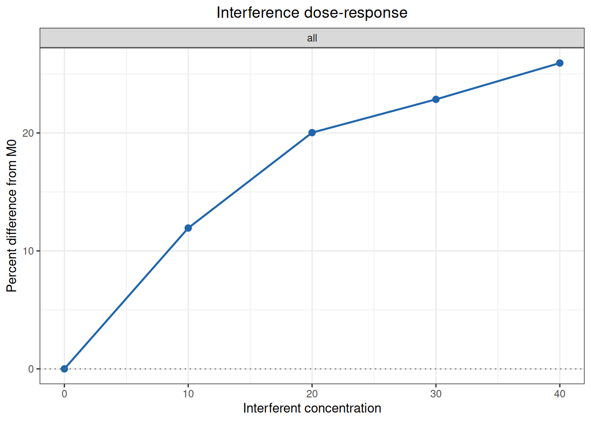
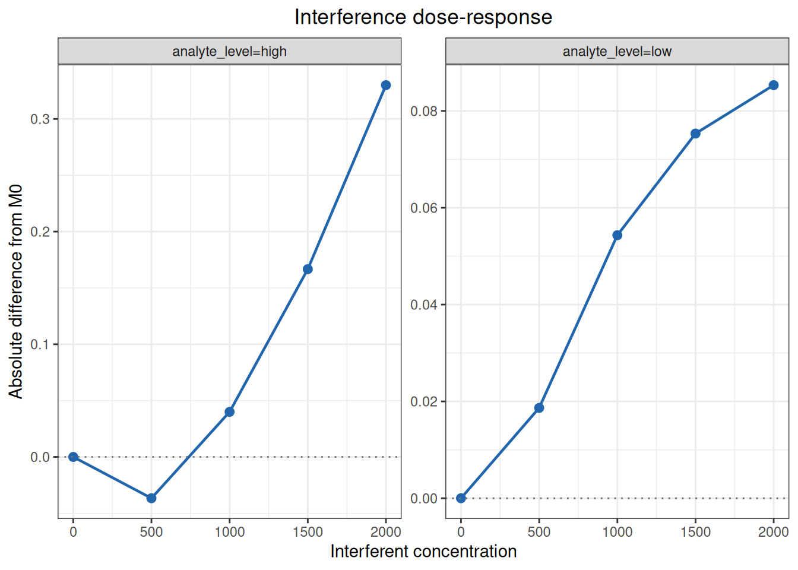
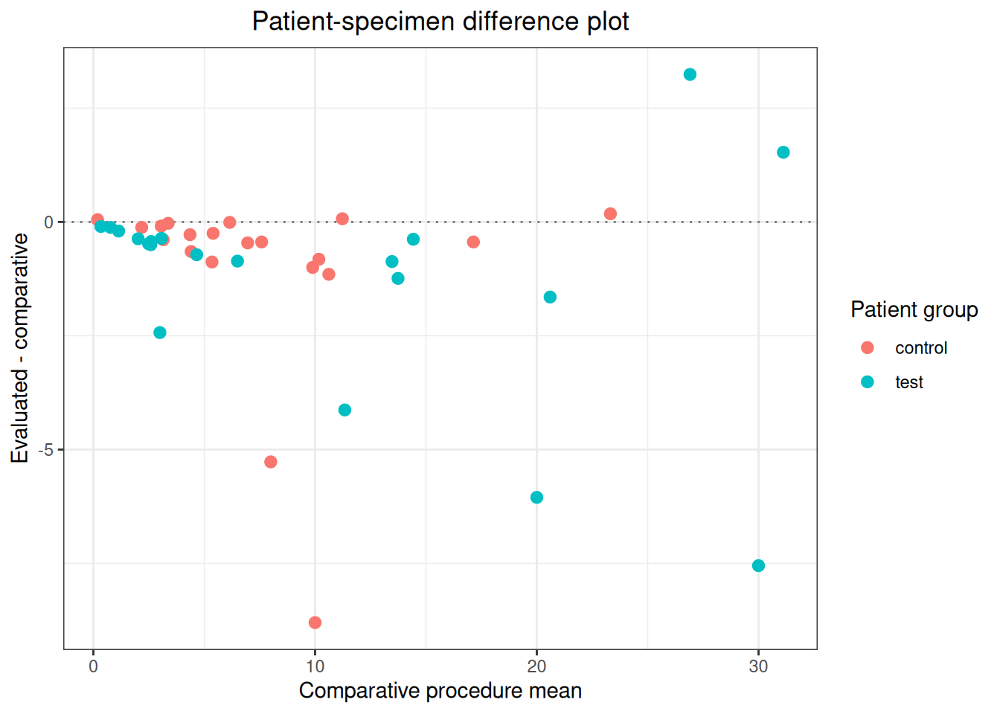

Code
library(ivdtools)
library(readr)Interference studies ask whether a potential interferent changes a measurement, how the effect changes with interferent concentration, and whether patient samples containing the factor show a larger method difference or dispersion. These are different analysis paths and should not be collapsed into one summary number.
| Path | Main question | Main result |
|---|---|---|
| Paired preparation screen | Is the test sample sufficiently different from the solvent control at specified analyte/interferent levels? | Absolute/relative effect and confidence interval |
| Dose response | How does the effect change with interferent concentration? | Baseline-relative effect, monotonicity, interpolation |
| Patient-sample comparison | Do patient samples with the factor show method differences or increased dispersion? | Per-sample difference, group summary, difference–interferent regression |
Interference conclusions require prespecified interferents, concentrations, replicates, direction, and allowable effect. A statistical difference is not automatically clinically or analytically important. Keep the preparation design, solvent control, patient grouping, and method-difference direction explicit.
library(ivdtools)
library(readr)| Function | Purpose | Return value |
|---|---|---|
interference_replicates() |
Calculate required test and control replicates | interference_replicates data frame |
interference_paired() |
Analyze paired-preparation interference | interference_paired object |
interference_dose_response() |
Analyze interferent dose response | interference_dose_response object |
predict() |
Forward or inverse prediction from a dose-response result | Prediction data frame |
interference_patient() |
Analyze method differences in patient samples | interference_patient object |
interference_replicates(
sd, detectable_difference, alpha = 0.05, power = 0.90,
alternative = c("two.sided", "one.sided"), min_replicates = 5,
label = NULL
)sd is expected repeatability SD, or repeatability CV on a relative scale. detectable_difference uses the same scale and compatible length. alpha and power must be finite values between 0 and 1; alternative determines one- or two-sided planning. The result is a design quantity, not an acceptance decision.
interference_paired(
data, result, design = c("ep07", "analyte_spike", "blank"),
by = NULL, condition = NULL, test_level = NULL, control_level = NULL,
matrix = NULL, normal_level = NULL, interferent_level = NULL,
spike = NULL, unspiked_level = NULL, spiked_level = NULL,
conf.level = 0.95
)The data are long format, one replicate per row. For ep07, identify test and solvent-control conditions; for analyte_spike, identify normal/interferent matrix and unspiked/spiked analyte; for blank, identify the relevant condition. The returned object contains paired effects, relative effects, standard errors, intervals, and group summaries.
interference_dose_response(
data, result, concentration, by = NULL, baseline,
method = c("point_to_point", "linear"), conf.level = 0.95
)baseline must be an observed interferent concentration in every stratum. point_to_point interpolates adjacent concentration means; linear fits a straight line to individual results. The object preserves the baseline-relative effect, model coefficients, and predictions.
interference_patient(
data, id, group, method, result,
test_group, control_group, evaluated_method, comparative_method,
interferent_cols = NULL, conf.level = 0.95
)The difference is defined as evaluated method minus comparative method. Optional interferent columns are fitted one at a time; group summaries and regression intervals use the specified confidence level.
ep07_paired <- as.data.frame(read_csv(
"./data/007-干扰研究/std-ep07-table3-paired.csv",
show_col_types = FALSE
))
ep07_fit <- interference_paired(
ep07_paired, result = "result", design = "ep07",
by = "level", condition = "condition",
test_level = "test", control_level = "control", conf.level = 0.95
)
print(ep07_fit)Interference paired-difference analysis
Design: ep07
Confidence level: 95%
level: low
stratum : level=low
design : ep07
n_test : 5
n_control : 5
test_mean : 0.3
control_mean : 0.5
absolute_difference : -0.2
absolute_se : 0.033166248
df : 8
absolute_ci_lower : -0.2764815
absolute_ci_upper : -0.1235185
percent_difference : -40
percent_se : 6.6332496
percent_ci_lower : -55.296301
percent_ci_upper : -24.703699
level: high
stratum : level=high
design : ep07
n_test : 5
n_control : 5
test_mean : 4.55
control_mean : 5
absolute_difference : -0.45
absolute_se : 0.096436508
df : 8
absolute_ci_lower : -0.67238299
absolute_ci_upper : -0.22761701
percent_difference : -9
percent_se : 1.9287302
percent_ci_lower : -13.44766
percent_ci_upper : -4.5523403ep07_dose <- as.data.frame(read_csv(
"./data/007-干扰研究/std-ep07-table4-dose-response.csv",
show_col_types = FALSE
))
ep07_dose_fit <- interference_dose_response(
ep07_dose, result = "result", concentration = "concentration",
baseline = 0, method = "point_to_point"
)
print(ep07_dose_fit)Interference dose-response analysis
Method: point_to_point
Baseline concentration: 0
Stratum: all | Concentration: 0
Observations : 5
Mean : 200.02
SD : 1.7753873
SE : 0.79397733
Absolute difference : 0
Percent difference : 0
CV percent : 0.88760488
Stratum: all | Concentration: 10
Observations : 5
Mean : 223.9
SD : 4.645966
SE : 2.0777392
Absolute difference : 23.88
Percent difference : 11.938806
CV percent : 2.0750183
Stratum: all | Concentration: 20
Observations : 5
Mean : 240.08
SD : 3.3536547
SE : 1.4998
Absolute difference : 40.06
Percent difference : 20.027997
CV percent : 1.3968905
Stratum: all | Concentration: 30
Observations : 5
Mean : 245.72
SD : 4.7892588
SE : 2.1418217
Absolute difference : 45.7
Percent difference : 22.847715
CV percent : 1.9490716
Stratum: all | Concentration: 40
Observations : 5
Mean : 251.88
SD : 4.4549972
SE : 1.9923353
Absolute difference : 51.86
Percent difference : 25.927407
CV percent : 1.7686983plot(ep07_dose_fit)
patient_data <- as.data.frame(read_csv(
"./data/007-干扰研究/std-yyt1789-5-appendix-c-patient.csv",
show_col_types = FALSE
))
patient_fit <- interference_patient(
patient_data, id = "id", group = "group", method = "method",
result = "result", test_group = "test", control_group = "control",
evaluated_method = "evaluated", comparative_method = "comparative"
)
print(patient_fit)Patient-specimen interference evaluation
Evaluated - comparative: evaluated - comparative
Group: test
Observations : 20
Mean difference : -1.1835
SD difference : 2.3930541
SE difference : 0.53510317
Median difference : -0.49
25th percentile : -1.3425
75th percentile : -0.32
CI lower : -2.3034838
CI upper : -0.063516183
Mean percent difference : -17.916419
SD percent difference : 18.774944
Percent CI lower : -26.703363
Percent CI upper : -9.1294749
Group: control
Observations : 20
Mean difference : -1.039
SD difference : 2.1614978
SE difference : 0.4833256
Median difference : -0.415
25th percentile : -0.835
75th percentile : -0.075
CI lower : -2.0506121
CI upper : -0.027387902
Mean percent difference : -11.712959
SD percent difference : 24.21947
Percent CI lower : -23.04802
Percent CI upper : -0.37789805Report the design, interferent and concentration, control preparation, replicate count, effect definition, confidence method, and allowable effect. A dose-response line can describe an association without proving mechanism. A patient-sample regression can be confounded by disease severity, sample matrix, or method range. EP07 and YY/T 1789.5 standard examples in the supplied data directory can be cross-checked with the same functions, but standard-specific acceptance limits and study conclusions remain external to the package.
Section 5.1.1 of EP07 uses a two-sided example with repeatability SD 1.0 mg/dL, 95% confidence, 95% power, and a detectable effect of 1.5 mg/dL. Section 5.1.4 assumes a repeatability CV of 5% and detects effects of 7% and 10% with 95% confidence and 90% power. SD and difference, or CV and percentage difference, are on matching scales, so the same formula can be used.
ep07_replicates_511 <- interference_replicates(
sd = 1,
detectable_difference = 1.5,
alpha = 0.05,
power = 0.95,
label = "5.1.1 two-sided"
)
ep07_replicates_514 <- interference_replicates(
sd = c(5, 5),
detectable_difference = c(7, 10),
alpha = 0.05,
power = 0.90,
label = c("5.1.4 7%", "5.1.4 10%")
)
rbind(ep07_replicates_511, ep07_replicates_514)EP07 paired-difference replicate design
Label: 5.1.1 two-sided
SD : 1
Detectable difference : 1.5
Difference / SD : 1.5
Alpha : 0.05
Power : 0.95
Alternative : two.sided
Z alpha : 1.959964
Z power : 1.6448536
Calculated replicates : 11.550853
Replicates per sample : 12
Minimum replicates : 5
Label: 5.1.4 7%
SD : 5
Detectable difference : 7
Difference / SD : 1.4
Alpha : 0.05
Power : 0.9
Alternative : two.sided
Z alpha : 1.959964
Z power : 1.2815516
Calculated replicates : 10.72186
Replicates per sample : 11
Minimum replicates : 5
Label: 5.1.4 10%
SD : 5
Detectable difference : 10
Difference / SD : 2
Alpha : 0.05
Power : 0.9
Alternative : two.sided
Z alpha : 1.959964
Z power : 1.2815516
Calculated replicates : 5.2537115
Replicates per sample : 6
Minimum replicates : 5| Standard position | Standard calculated | ivdtools calculated | Standard replicates | ivdtools replicates |
|---|---|---|---|---|
| 5.1.1 two-sided | 11.550853 | 11.550853 | 12 | 12 |
| 5.1.4 7% | 10.721860 | 10.721860 | 11 | 11 |
| 5.1.4 10% | 5.253712 | 5.253712 | 6 | 6 |
The replicate count must be satisfied separately for every test sample and control sample; the two groups must not be added together and interpreted as one total sample size.
EP07 Table 3 compares five test replicates with five solvent-control replicates at analyte levels 0.50 and 5.00 mg/dL and an interferent concentration of 500 mg/dL. The effect direction is consistently test − control; use the absolute difference at the low level and the percentage difference relative to the control mean at the high level.
ep07_table3 <- read_csv(
"./data/007-干扰研究/std-ep07-table3-paired.csv",
show_col_types = FALSE
)
head(ep07_table3, 6)# A tibble: 6 × 5
level condition replicate result unit
<chr> <chr> <dbl> <dbl> <chr>
1 low control 1 0.45 mg/dL
2 low control 2 0.56 mg/dL
3 low control 3 0.48 mg/dL
4 low control 4 0.54 mg/dL
5 low control 5 0.47 mg/dL
6 low test 1 0.24 mg/dLep07_table3_result <- interference_paired(
as.data.frame(ep07_table3),
result = "result",
design = "ep07",
condition = "condition",
test_level = "test",
control_level = "control",
by = "level",
conf.level = 0.95
)
ep07_table3_resultInterference paired-difference analysis
Design: ep07
Confidence level: 95%
level: low
stratum : level=low
design : ep07
n_test : 5
n_control : 5
test_mean : 0.3
control_mean : 0.5
absolute_difference : -0.2
absolute_se : 0.033166248
df : 8
absolute_ci_lower : -0.2764815
absolute_ci_upper : -0.1235185
percent_difference : -40
percent_se : 6.6332496
percent_ci_lower : -55.296301
percent_ci_upper : -24.703699
level: high
stratum : level=high
design : ep07
n_test : 5
n_control : 5
test_mean : 4.55
control_mean : 5
absolute_difference : -0.45
absolute_se : 0.096436508
df : 8
absolute_ci_lower : -0.67238299
absolute_ci_upper : -0.22761701
percent_difference : -9
percent_se : 1.9287302
percent_ci_lower : -13.44766
percent_ci_upper : -4.5523403The recalculated low-level control/test means are 0.50/0.30 mg/dL, with an absolute effect of −0.20 mg/dL and a 95% CI of −0.28 to −0.12 mg/dL. The high-level means are 5.00/4.55 mg/dL, with a relative effect of −9.0% and a 95% CI of −13.4% to −4.6% in ascending order. The standard prints the high-level interval in reverse order; only the display order is changed here.
| level | statistic | standard | ivdtools |
|---|---|---|---|
| low | control_mean | 0.500 | 0.5000 |
| low | test_mean | 0.300 | 0.3000 |
| low | control_sd | 0.047 | 0.0474 |
| low | test_sd | 0.057 | 0.0570 |
| low | difference | -0.200 | -0.2000 |
| low | ci_lower | -0.280 | -0.2765 |
| low | ci_upper | -0.120 | -0.1235 |
| high | control_mean | 5.000 | 5.0000 |
| high | test_mean | 4.550 | 4.5500 |
| high | control_sd | 0.141 | 0.1409 |
| high | test_sd | 0.163 | 0.1632 |
| high | difference_percent | -9.000 | -9.0000 |
| high | ci_lower_percent | -13.400 | -13.4477 |
| high | ci_upper_percent | -4.600 | -4.5523 |
Under the case’s prespecified limits, the low-level point estimate of −0.20 mg/dL exceeds ±0.10 mg/dL, while the high-level point estimate of −9.0% is within ±10%; this screening case therefore reports interference only at the low level. If equivalence is prespecified, the entire confidence interval should instead be required to lie within the allowable difference.
EP07 Table 4 presents simulated dose–response data: interferent concentrations of 0, 10, 20, 30, and 40 mg/dL, with five measurements at each concentration. The analyte results are expressed in nmol/L. The means increase monotonically with interferent concentration but gradually flatten at high concentrations, so the main text uses a point-to-point method between adjacent means rather than summarizing the full range with one straight line.
ep07_table4 <- read_csv(
"./data/007-干扰研究/std-ep07-table4-dose-response.csv",
show_col_types = FALSE
)
head(ep07_table4, 6)# A tibble: 6 × 6
sample replicate concentration result concentration_unit result_unit
<dbl> <dbl> <dbl> <dbl> <chr> <chr>
1 1 1 0 201. mg/dL nmol/L
2 1 2 0 199. mg/dL nmol/L
3 1 3 0 198. mg/dL nmol/L
4 1 4 0 200. mg/dL nmol/L
5 1 5 0 202. mg/dL nmol/L
6 2 1 10 218. mg/dL nmol/L ep07_table4_result <- interference_dose_response(
ep07_table4,
result = "result",
concentration = "concentration",
baseline = 0,
method = "point_to_point"
)
ep07_table4_resultInterference dose-response analysis
Method: point_to_point
Baseline concentration: 0
Stratum: all | Concentration: 0
Observations : 5
Mean : 200.02
SD : 1.7753873
SE : 0.79397733
Absolute difference : 0
Percent difference : 0
CV percent : 0.88760488
Stratum: all | Concentration: 10
Observations : 5
Mean : 223.9
SD : 4.645966
SE : 2.0777392
Absolute difference : 23.88
Percent difference : 11.938806
CV percent : 2.0750183
Stratum: all | Concentration: 20
Observations : 5
Mean : 240.08
SD : 3.3536547
SE : 1.4998
Absolute difference : 40.06
Percent difference : 20.027997
CV percent : 1.3968905
Stratum: all | Concentration: 30
Observations : 5
Mean : 245.72
SD : 4.7892588
SE : 2.1418217
Absolute difference : 45.7
Percent difference : 22.847715
CV percent : 1.9490716
Stratum: all | Concentration: 40
Observations : 5
Mean : 251.88
SD : 4.4549972
SE : 1.9923353
Absolute difference : 51.86
Percent difference : 25.927407
CV percent : 1.7686983Using the mean at 0 mg/dL, \(M_0=200.02\) nmol/L, as the baseline, calculate the absolute and relative effects at each concentration. The main text also asks at which interferent concentration the mean effect reaches 10%. This can be obtained by reverse interpolation between the measured 0 and 10 mg/dL nodes:
ep07_table4_limit <- predict(
ep07_table4_result,
target = 10,
metric = "percent"
)
ep07_table4_limit stratum direction metric input estimate within_observed_range
1 all inverse percent 10 8.376047 TRUEplot(ep07_table4_result, type = "percent")
Compare the recalculated values with EP07 Table 4 and Section 6.2.4.3:
| Standard location | Statistic | Standard | ivdtools |
|---|---|---|---|
| 0 | mean | 200.020 | 200.02000 |
| 10 | mean | 223.900 | 223.90000 |
| 20 | mean | 240.080 | 240.08000 |
| 30 | mean | 245.720 | 245.72000 |
| 40 | mean | 251.880 | 251.88000 |
| 0 | cv_percent | 0.900 | 0.88760 |
| 10 | cv_percent | 2.100 | 2.07502 |
| 20 | cv_percent | 1.400 | 1.39689 |
| 30 | cv_percent | 1.900 | 1.94907 |
| 40 | cv_percent | 1.800 | 1.76870 |
| 10 | absolute_difference | 23.880 | 23.88000 |
| 20 | absolute_difference | 40.060 | 40.06000 |
| 30 | absolute_difference | 45.700 | 45.70000 |
| 40 | absolute_difference | 51.860 | 51.86000 |
| 10 | percent_difference | 11.940 | 11.93881 |
| 20 | percent_difference | 20.030 | 20.02800 |
| 30 | percent_difference | 22.850 | 22.84772 |
| 40 | percent_difference | 25.930 | 25.92741 |
| all | interference_at_10_percent | 8.375 | 8.37605 |
Reverse interpolation gives 8.376 mg/dL. The main text reports 8.375 mg/dL when calculated from the rounded 11.94% value in the table, and recommends reporting at most one decimal place after considering study uncertainty, or approximately 8.4 mg/dL. The estimate lies within the measured range but remains an estimate between two nodes; for a critical claim, samples should be prepared and tested near this concentration.
EP07 Section 6.2.5.4 also uses these data to illustrate the limitation of a quadratic curve. Following the main text, fit a quadratic polynomial to all 25 individual results:
ep07_table4_quadratic <- lm(
result ~ concentration + I(concentration^2),
data = ep07_table4
)
ep07_table4_quadratic_coef <- coef(ep07_table4_quadratic) term estimate
1 (Intercept) 200.64342857
2 concentration 2.56911429
3 I(concentration^2) -0.03284286| Standard location | Statistic | Standard | ivdtools |
|---|---|---|---|
| EP07 6.2.5.4 | intercept | 200.640000 | 200.643429 |
| EP07 6.2.5.4 | linear_term | 2.569100 | 2.569114 |
| EP07 6.2.5.4 | quadratic_term | -0.032843 | -0.032843 |
| EP07 6.2.5.4 | turning_point | 39.100000 | 39.112223 |
The quadratic model suggests that the effect turns downward after approximately 39.1 mg/dL. This is mainly a shape imposed by the function, not a mechanism demonstrated by the experiment. The quadratic fit is therefore retained here to reproduce the warning in the standard text, while interpretation continues to use the point-to-point result.
Table 5 uses the same five interferent concentrations and five measurements per concentration, but the data follow an approximately linear trajectory. In this case, method = “linear” fits the analyte result against interferent concentration using all 25 individual results, rather than regressing only the five concentration means.
ep07_table5 <- read_csv(
"./data/007-干扰研究/std-ep07-table5-dose-response.csv",
show_col_types = FALSE
)
head(ep07_table5, 6)# A tibble: 6 × 6
sample replicate concentration result concentration_unit result_unit
<dbl> <dbl> <dbl> <dbl> <chr> <chr>
1 1 1 0 200. mg/dL nmol/L
2 1 2 0 200. mg/dL nmol/L
3 1 3 0 203. mg/dL nmol/L
4 1 4 0 198. mg/dL nmol/L
5 1 5 0 206. mg/dL nmol/L
6 2 1 10 212. mg/dL nmol/L ep07_table5_result <- interference_dose_response(
ep07_table5,
result = "result",
concentration = "concentration",
baseline = 0,
method = "linear"
)
ep07_table5_resultInterference dose-response analysis
Method: linear
Baseline concentration: 0
Stratum: all | Concentration: 0
Observations : 5
Mean : 201.44
SD : 3.1101447
SE : 1.390899
Absolute difference : 0
Percent difference : 0
CV percent : 1.5439559
Stratum: all | Concentration: 10
Observations : 5
Mean : 212.28
SD : 2.2785961
SE : 1.0190191
Absolute difference : 10.84
Percent difference : 5.381255
CV percent : 1.0733918
Stratum: all | Concentration: 20
Observations : 5
Mean : 226.56
SD : 5.2122932
SE : 2.3310084
Absolute difference : 25.12
Percent difference : 12.470214
CV percent : 2.3006237
Stratum: all | Concentration: 30
Observations : 5
Mean : 239.2
SD : 2.9597297
SE : 1.3236314
Absolute difference : 37.76
Percent difference : 18.745036
CV percent : 1.2373452
Stratum: all | Concentration: 40
Observations : 5
Mean : 249.6
SD : 2.9732137
SE : 1.3296616
Absolute difference : 48.16
Percent difference : 23.907863
CV percent : 1.1911914plot(ep07_table5_result, type = "absolute")
| Standard location | Statistic | Standard | ivdtools |
|---|---|---|---|
| 0 | mean | 201.4400 | 201.44000 |
| 10 | mean | 212.2800 | 212.28000 |
| 20 | mean | 226.5600 | 226.56000 |
| 30 | mean | 239.2000 | 239.20000 |
| 40 | mean | 249.6000 | 249.60000 |
| 0 | cv_percent | 1.5000 | 1.54396 |
| 10 | cv_percent | 1.1000 | 1.07339 |
| 20 | cv_percent | 2.3000 | 2.30062 |
| 30 | cv_percent | 1.2000 | 1.23735 |
| 40 | cv_percent | 1.2000 | 1.19119 |
| all | intercept | 201.1700 | 201.16800 |
| all | slope | 1.2324 | 1.23240 |
| all | difference_intercept | -0.2720 | -0.27200 |
Using the five replicates at 0 mg/dL gives \(M_0=201.44\) nmol/L. Regression of all individual results gives \(Y=1.2324X+201.168\); the main text writes the intercept as 201.17 nmol/L. If the results are first converted to absolute effects using \(M_0\), the equation is \(d=1.2324X-0.272\). The regression intercept and the measured baseline mean are two different estimates of the no-interferent result and should not be mixed. The linear method is appropriate only when the scatter is approximately linear across the measured range; a high goodness of fit does not justify ignoring local curvature or extrapolating beyond the observed range.
Appendix A uses low- and high-level thyroid-stimulating hormone (TSH) samples, at 0.3 and 5.0 µIU/mL, respectively. It screens 2,000 mg/dL hemoglobin and 2,000 IU/mL rheumatoid factor. Test preparations receive interferent stock solution, while control preparations receive the same volume of physiological saline; each preparation is measured three times.
yyt1789_a_data <- read_csv(
"./data/007-干扰研究/std-yyt1789-5-appendix-a-paired.csv",
show_col_types = FALSE
)
head(yyt1789_a_data, 6)# A tibble: 6 × 7
interferent analyte_level condition interferent_concentration replicate result
<chr> <chr> <chr> <dbl> <dbl> <dbl>
1 hemoglobin low control 0 1 0.272
2 hemoglobin low control 0 2 0.279
3 hemoglobin low control 0 3 0.278
4 hemoglobin low test 2000 1 0.347
5 hemoglobin low test 2000 2 0.358
6 hemoglobin low test 2000 3 0.354
# ℹ 1 more variable: unit <chr>yyt1789_a <- interference_paired(
yyt1789_a_data,
result = "result",
design = "ep07",
condition = "condition",
test_level = "test",
control_level = "control",
by = c("interferent", "analyte_level"),
conf.level = 0.95
)plot(yyt1789_a)
Compare the results with the standard text:
| Standard location | Statistic | Standard | ivdtools |
|---|---|---|---|
| hemoglobin_low | control_mean | 0.276 | 0.2763 |
| hemoglobin_low | test_mean | 0.353 | 0.3530 |
| hemoglobin_low | difference | 0.077 | 0.0767 |
| hemoglobin_high | control_mean | 5.303 | 5.3033 |
| hemoglobin_high | test_mean | 5.747 | 5.7467 |
| hemoglobin_high | difference | 0.443 | 0.4433 |
| rheumatoid_factor_low | control_mean | 0.266 | 0.2660 |
| rheumatoid_factor_low | test_mean | 0.261 | 0.2610 |
| rheumatoid_factor_low | difference | -0.005 | -0.0050 |
| rheumatoid_factor_high | control_mean | 5.483 | 5.4833 |
| rheumatoid_factor_high | test_mean | 5.643 | 5.6433 |
| rheumatoid_factor_high | difference | 0.160 | 0.1600 |
The hemoglobin effects at the low and high levels are 0.0767 and 0.4433 µIU/mL, respectively. The critical bias values \(B_c\) in Table A.3 are 0.024 and 0.432 µIU/mL, so both levels proceed to further dose–response evaluation under the statistical rule in the standard text. The rheumatoid-factor effects are −0.0050 and 0.1600 µIU/mL, within the case’s technical limits of ±0.03 and ±0.5 µIU/mL, respectively.
The confidence intervals from the paired-interference analysis use the observed SD of the preparation units. Table A.3 of YY/T 1789.5 instead uses the repeatability SD from a prior precision study and a standard-specific formula for \(B_c\). This case therefore compares preparation-unit means and effects with the standard table without misrepresenting the software interval as the standard’s \(B_c\) decision.
Appendix B prepares low- and high-level TSH samples at five hemoglobin concentrations: 0, 500, 1,000, 1,500, and 2,000 mg/dL, with three measurements at each concentration. The standard uses the mean at 0 mg/dL as the control and uses point-to-point interpolation to determine the interferent concentration at which the allowable bias is reached.
yyt1789_b_data <- read_csv(
"./data/007-干扰研究/std-yyt1789-5-appendix-b-dose.csv",
show_col_types = FALSE
)
head(yyt1789_b_data, 6)# A tibble: 6 × 7
interferent analyte_level concentration replicate result result_unit
<chr> <chr> <dbl> <dbl> <dbl> <chr>
1 hemoglobin low 0 1 0.282 uIU/mL
2 hemoglobin low 0 2 0.29 uIU/mL
3 hemoglobin low 0 3 0.263 uIU/mL
4 hemoglobin low 500 1 0.274 uIU/mL
5 hemoglobin low 500 2 0.307 uIU/mL
6 hemoglobin low 500 3 0.31 uIU/mL
# ℹ 1 more variable: concentration_unit <chr>yyt1789_b <- interference_dose_response(
yyt1789_b_data,
result = "result",
concentration = "concentration",
by = "analyte_level",
baseline = 0,
method = "point_to_point"
)The allowable bias for the low-level sample is ±0.03 µIU/mL. Reverse-interpolate the absolute effect at 0.03 µIU/mL:
yyt1789_b_limit <- predict(
yyt1789_b,
target = 0.03,
metric = "absolute",
stratum = "analyte_level=low"
)plot(yyt1789_b, type = "absolute")
Compare the results with the standard text:
| Standard location | Statistic | Standard | ivdtools |
|---|---|---|---|
| low_0 | mean | 0.278 | 0.2783 |
| low_0 | difference | 0.000 | 0.0000 |
| low_500 | mean | 0.297 | 0.2970 |
| low_500 | difference | 0.019 | 0.0187 |
| low_1000 | mean | 0.333 | 0.3327 |
| low_1000 | difference | 0.054 | 0.0543 |
| low_1500 | mean | 0.354 | 0.3537 |
| low_1500 | difference | 0.075 | 0.0753 |
| low_2000 | mean | 0.364 | 0.3637 |
| low_2000 | difference | 0.085 | 0.0853 |
| high_0 | mean | 5.273 | 5.2733 |
| high_0 | difference | 0.000 | 0.0000 |
| high_500 | mean | 5.237 | 5.2367 |
| high_500 | difference | -0.037 | -0.0367 |
| high_1000 | mean | 5.313 | 5.3133 |
| high_1000 | difference | 0.040 | 0.0400 |
| high_1500 | mean | 5.440 | 5.4400 |
| high_1500 | difference | 0.167 | 0.1667 |
| high_2000 | mean | 5.603 | 5.6033 |
| high_2000 | difference | 0.330 | 0.3300 |
| low | interference_concentration | 658.880 | 658.8785 |
The low-level effect crosses 0.03 µIU/mL between 500 and 1,000 mg/dL, giving 658.88 mg/dL by point-to-point reverse interpolation. At the high level, the absolute effect remains within ±0.5 µIU/mL at all measured concentrations. The case therefore reports 658.88 mg/dL as the hemoglobin concentration resisted by the evaluated system, taking the lower result of the two analyte levels. This is an interpolation between measured nodes, not a result measured directly at 658.88 mg/dL.
Appendix C uses EDTA-anticoagulated plasma as the test group and serum as the control group, with 20 patient samples in each group. Every sample is measured by both the evaluated measurement procedure and a comparative procedure claimed for serum and EDTA plasma. The source Table C.1 lists one procedure result per sample, rather than single-replicate records, so the input has one row per sample-by-procedure combination.
yyt1789_c_data <- read_csv(
"./data/007-干扰研究/std-yyt1789-5-appendix-c-patient.csv",
show_col_types = FALSE
)
head(yyt1789_c_data, 6)# A tibble: 6 × 5
id group method result unit
<chr> <chr> <chr> <dbl> <chr>
1 C01 control comparative 23.3 uIU/mL
2 C01 control evaluated 23.5 uIU/mL
3 C02 control comparative 8 uIU/mL
4 C02 control evaluated 2.73 uIU/mL
5 C03 control comparative 5.35 uIU/mL
6 C03 control evaluated 4.47 uIU/mLyyt1789_c <- interference_patient(
yyt1789_c_data,
id = "id",
group = "group",
method = "method",
result = "result",
test_group = "test",
control_group = "control",
evaluated_method = "evaluated",
comparative_method = "comparative",
conf.level = 0.95
)
yyt1789_cPatient-specimen interference evaluation
Evaluated - comparative: evaluated - comparative
Group: test
Observations : 20
Mean difference : -1.1835
SD difference : 2.3930541
SE difference : 0.53510317
Median difference : -0.49
25th percentile : -1.3425
75th percentile : -0.32
CI lower : -2.3034838
CI upper : -0.063516183
Mean percent difference : -17.916419
SD percent difference : 18.774944
Percent CI lower : -26.703363
Percent CI upper : -9.1294749
Group: control
Observations : 20
Mean difference : -1.039
SD difference : 2.1614978
SE difference : 0.4833256
Median difference : -0.415
25th percentile : -0.835
75th percentile : -0.075
CI lower : -2.0506121
CI upper : -0.027387902
Mean percent difference : -11.712959
SD percent difference : 24.21947
Percent CI lower : -23.04802
Percent CI upper : -0.37789805plot(yyt1789_c, type = "difference")
Compare the results with the standard text:
| Standard location | Statistic | Standard | ivdtools |
|---|---|---|---|
| control | mean_difference | -1.04 | -1.0390 |
| control | sd_difference | 2.16 | 2.1615 |
| control | ci_lower | -2.05 | -2.0506 |
| control | ci_upper | -0.03 | -0.0274 |
| test | mean_difference | -1.18 | -1.1835 |
| test | sd_difference | 2.39 | 2.3931 |
| test | ci_lower | -2.30 | -2.3035 |
| test | ci_upper | -0.06 | -0.0635 |
The mean difference for the control group is −1.039 µIU/mL, with a 95% CI of −2.051 to −0.027 µIU/mL. For the test group, the mean is −1.184 µIU/mL, with a 95% CI of −2.303 to −0.064 µIU/mL. The intervals overlap, so Appendix C concludes that the EDTA anticoagulant does not interfere with this TSH measurement. Both groups show negative bias relative to the comparative procedure; the decision is based on overlap between the two group intervals, not on whether either interval contains zero.
Appendix D adds 200,000 µIU/mL luteinizing hormone (LH) to low- and high-level TSH base samples and uses controls with the same volume of diluent. First obtain the test-minus-control effect with paired interference analysis, then calculate the standard-defined cross-reactivity rate:
\[\text{Cross-reactivity rate}=\frac{\bar{x}_{T}-\bar{x}_{C}}{C_{interferent}}\times100\%.\]
yyt1789_d_data <- read_csv(
"./data/007-干扰研究/std-yyt1789-5-appendix-d-cross-reactivity.csv",
show_col_types = FALSE
)
head(yyt1789_d_data)# A tibble: 6 × 8
interferent analyte_level condition interferent_concentration replicate result
<chr> <chr> <chr> <dbl> <dbl> <dbl>
1 LH low control 0 1 0.281
2 LH low control 0 2 0.283
3 LH low control 0 3 0.282
4 LH low test 200000 1 0.312
5 LH low test 200000 2 0.305
6 LH low test 200000 3 0.298
# ℹ 2 more variables: result_unit <chr>, concentration_unit <chr>yyt1789_d <- interference_paired(
yyt1789_d_data,
result = "result",
design = "ep07",
condition = "condition",
test_level = "test",
control_level = "control",
by = "analyte_level",
conf.level = 0.95
)
yyt1789_dInterference paired-difference analysis
Design: ep07
Confidence level: 95%
analyte_level: low
stratum : analyte_level=low
design : ep07
n_test : 3
n_control : 3
test_mean : 0.305
control_mean : 0.282
absolute_difference : 0.023
absolute_se : 0.0040824829
df : 4
absolute_ci_lower : 0.01166521
absolute_ci_upper : 0.03433479
percent_difference : 8.1560284
percent_se : 1.447689
percent_ci_lower : 4.1365994
percent_ci_upper : 12.175457
analyte_level: high
stratum : analyte_level=high
design : ep07
n_test : 3
n_control : 3
test_mean : 5.2366667
control_mean : 5.04
absolute_difference : 0.19666667
absolute_se : 0.04772607
df : 4
absolute_ci_lower : 0.064157853
absolute_ci_upper : 0.32917548
percent_difference : 3.9021164
percent_se : 0.94694584
percent_ci_lower : 1.2729733
percent_ci_upper : 6.5312595yyt1789_d_effects <- yyt1789_d$effects
yyt1789_d_effects$cross_reactivity_percent <-
100 * yyt1789_d_effects$absolute_difference / 200000Compare the results with the standard text:
| Standard location | Statistic | Standard | ivdtools |
|---|---|---|---|
| low | control_mean | 0.28200 | 0.282000 |
| low | test_mean | 0.30500 | 0.305000 |
| low | cross_reactivity_percent | 0.00001 | 0.000012 |
| high | control_mean | 5.04000 | 5.040000 |
| high | test_mean | 5.24000 | 5.236667 |
| high | cross_reactivity_percent | 0.00010 | 0.000098 |
The cross-reactivity rates for the low- and high-level samples are approximately 0.00001% and 0.00010%, respectively, both within the case’s prespecified range of −0.1% to 0.1%. This conversion is appropriate only when the unit relationship between analyte result and interferent concentration has a clear scientific meaning. The report must state both units and the interferent concentration used in the experiment.
interference_replicates(
sd,
detectable_difference,
alpha = 0.05,
power = 0.90,
alternative = c("two.sided", "one.sided"),
min_replicates = 5L,
label = NULL
)sd is expected repeatability SD; for relative-scale planning it is repeatability CV. detectable_difference uses the same scale and a compatible length. alpha is the type-I error probability, power is the target power, alternative selects a two- or one-sided design, min_replicates is the minimum number of test and control replicates per preparation, and label optionally names each calculation.
The result is an interference_replicates data frame with one row per design. It includes the inputs, difference_over_sd, z_alpha, z_power, calculated_replicates before rounding, and the final replicates_per_sample. The final count applies separately to each test and control preparation.
interference_paired(
data,
result,
design = c("ep07", "analyte_spike", "blank"),
by = NULL,
condition = NULL,
test_level = "test",
control_level = "control",
matrix = NULL,
normal_level = "normal",
interferent_level = "interferent",
spike = NULL,
unspiked_level = "unspiked",
spiked_level = "spiked",
conf.level = 0.95
)data is a long-format data frame with one replicate result per row. result names the numeric measurement column. design can be ep07, analyte_spike, or blank. by optionally supplies stratification columns such as interferent and analyte level. condition identifies test/control conditions for ep07 and optionally blank designs. test_level and control_level identify those values. matrix identifies the matrix column for analyte_spike; normal_level and interferent_level identify normal and interferent matrices; spike identifies analyte-spike status, and unspiked_level and spiked_level identify the two states. conf.level is the effect-interval confidence level.
For ep07, use condition with test_level and control_level. For analyte_spike, use matrix and spike settings. For blank, use condition to distinguish interferent blank and control, or compare with a theoretical zero when no control records exist.
The returned interference_paired object contains effects by stratum, including sample sizes, test/control means, absolute and relative effects, SEs, and intervals. cell_summary contains preparation-unit n, mean, SD, and SE; issues records data problems; excluded_rows stores omitted input rows; analysis_data stores analyzed rows. plot() returns preparation-unit and effect figures.
interference_dose_response(
data,
result,
concentration,
by = NULL,
baseline = 0,
method = c("point_to_point", "linear"),
conf.level = 0.95
)
predict(
object,
newdata = NULL,
target = NULL,
metric = c("result", "absolute", "percent"),
stratum = NULL
)
plot(x, type = c("response", "absolute", "percent"))data is a long-format dose-response data frame. result and concentration name the numeric result and interferent concentration columns. by optionally defines strata. baseline is the measured interferent concentration used for the baseline mean and must occur in every stratum. point_to_point interpolates between adjacent concentration means; linear fits a line to individual results. conf.level is the regression-coefficient confidence level.
predict() takes a dose-response object. Supply newdata to predict a result or effect at interferent concentrations, or target to reverse-predict the interferent concentration at a specified result/effect; exactly one of newdata and target is required. metric selects result, absolute effect, or percentage effect; stratum selects one or more strata. The function does not extrapolate and returns missing values outside the observed range. plot() selects result, absolute-effect, or percentage-effect figures.
The returned interference_dose_response object contains a summary of n, mean, SD, SE, CV, absolute effect, and percentage effect at each concentration; diagnostics for baseline, level count, replicate range, and monotonicity; coefficients and models for the linear method; and issues, excluded_rows, and analysis_data. predict() returns stratum, direction, metric, input, estimate, and within_observed_range.
interference_patient(
data,
id,
group,
method,
result,
test_group,
control_group,
evaluated_method,
comparative_method,
interferent_cols = NULL,
conf.level = 0.95
)
plot(
x,
type = c("difference", "interferent"),
interferent = NULL
)data is a long-format patient-sample result data frame. id names the sample identifier, group the patient test/control group, method the measurement procedure, and result the numeric result. test_group and control_group identify the two patient groups. evaluated_method and comparative_method define the difference direction as evaluated minus comparative. interferent_cols optionally names numeric interferent columns; each is fitted in a separate univariate model. conf.level controls group summaries and regression coefficients.
For plot(), type = “difference” plots method difference against the comparative-procedure mean; type = “interferent” plots difference against a selected interferent concentration. When several interferent columns exist, interferent selects the column to plot.
The returned interference_patient object contains method_summary for sample-by-method n, mean, and SD; specimen_results for complete method pairs and absolute/relative differences; group_summary for group-level differences and intervals; regressions and models for each interferent; and issues, incomplete_ids, and excluded_rows. plot() returns the corresponding figure.